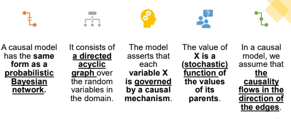

A correlation between two variables X and Y can arise in multiple settings:
○ when X causes Y ,
○ when Y causes X, or
○ when X and Y are both effects of a single cause.
If we observe two variables X,Y to be probabilistically correlated in some observed distribution, what can we infer about the causal relationship between them?
In practice, however, there is a huge set of possible latent variables, representing factors that exist in the world but that we cannot observe and often are not even aware of.
A latent variable may induce correlations between the observed variables that do not correspond to causal relations between them, and hence forms a confounding factor in our goal of determining causal interactions.
There are many cases where correlations might also arise due to non-causal reasons.
The correlation between a pair of variables X and Y may be a consequence of multiple mechanisms, where some are causal, and others are not.
To answer a causal query regarding an intervention at X, we need to disentangle these different mechanisms, and to isolate the component of the correlation that is due to the causal effect of X on Y.
In the mutilated network BZ=z, we eliminate all incoming edges into each variable Zi ∈ Z, and set its value to be zi with probability 1.
Based on this intuition, we can now define a causal model as a model that can answer intervention queries using the appropriate mutilated network.
